Candidate List 20251005Previous Day Next Day
Section 1: New Sources (age<1d) Section 2: Old (1-5d) sources observed last nightplaceholder
Section 2: Older Sources Observed Last Night (5)
0. ZTF25abuorfu (FBOT?) [Back to Top] [Share] [Trigger Swift] [Fritz] [Lasair]RA, Dec: 111.39676, 15.99745 7h25m35.22s, 15d59m50.81sGalactic (l, b): 202.19799, 14.63565 ext(g-r) = 0.112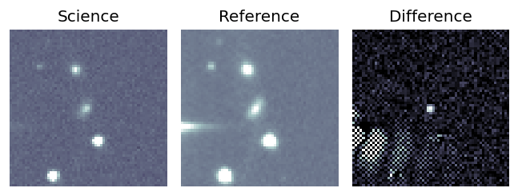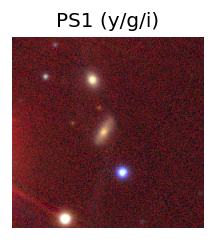
TESS: Sectors [44 45 46 71 72]
SDSS (10 arcsec):Found SDSS phot-z: z=0.10; peak abs mag = -19.53
PS1: 1 source in 3 arcsec Closest: d = 1.60 arcsec photoz=0.12+/-0.01 peak abs mag = -19.95
LegacySurvey: 0 sources in 3 arcsec
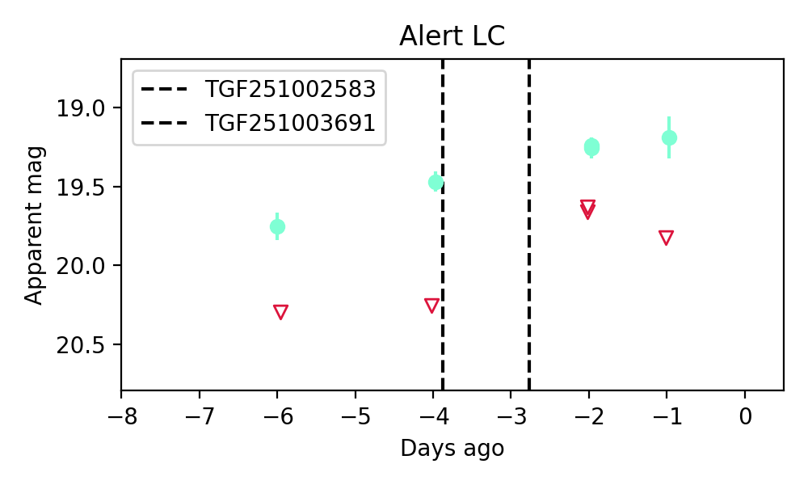
Extinction-corrected gr color:
From alerts: -0.75 +/- 99 mag
Rise Rate:
g: 0.2 mag/day
r: -99 mag/day
i: -99 mag/day
Fade Rate:
g: -99 mag/day
r: -99 mag/day
i: -99 mag/day
1. ZTF25abuvxsy (FBOT?) [Back to Top] [Share] [Trigger Swift] [Fritz] [Lasair]RA, Dec: 65.85647, 5.81671 4h23m25.55s, 5d49m0.16sGalactic (l, b): 188.36328, -29.12229 ext(g-r) = 0.258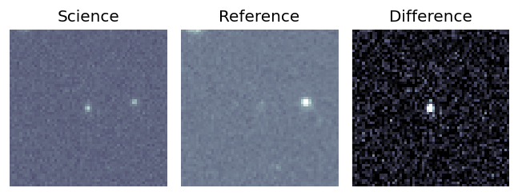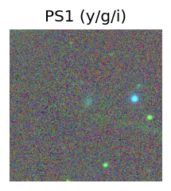
TESS: Sectors [ 5 32 98]
SDSS (10 arcsec):Found SDSS phot-z: z=0.37; peak abs mag = -23.60
PS1: 1 source in 3 arcsec Closest: d = 1.34 arcsec photoz=0.68+/-0.24 peak abs mag = -25.20
LegacySurvey: 0 sources in 3 arcsec
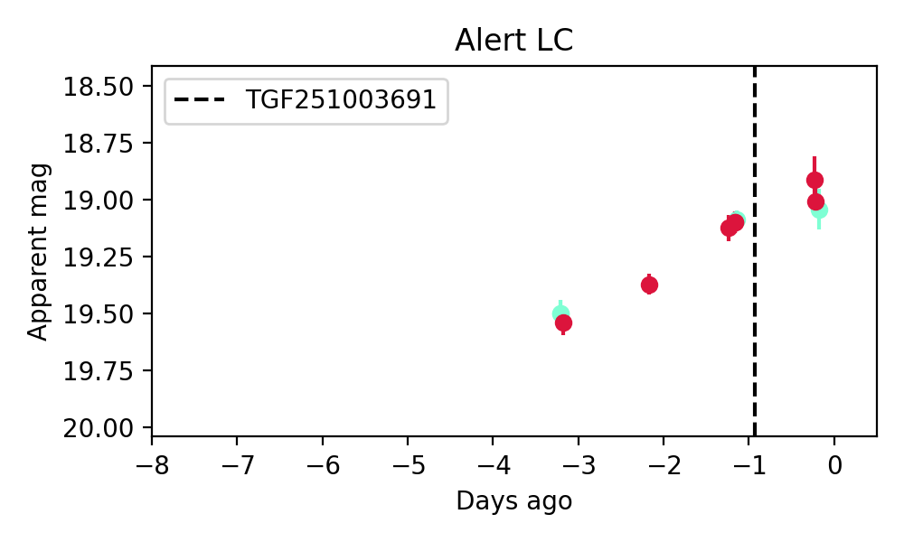
Extinction-corrected gr color:
From alerts: -0.27 +/- 0.09 mag
Rise Rate:
g: 0.29 mag/day
r: 0.2 mag/day
i: -99 mag/day
Fade Rate:
g: -99 mag/day
r: -99 mag/day
i: -99 mag/day
2. ZTF25abuzfte (Afterglow?FBOT?) [Back to Top] [Share] [Trigger Swift] [Fritz] [Lasair]RA, Dec: 264.58457, 41.16972 17h38m20.30s, 41d10m10.99sGalactic (l, b): 66.71661, 30.68055 ext(g-r) = 0.038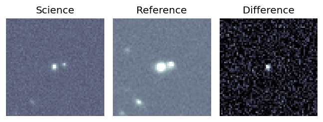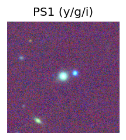
TESS: Sectors [ 25 26 40 52 53 79 80 117 118]
PS1: 1 source in 3 arcsec Closest: d = 0.27 arcsec photoz=0.09+/-0.01 peak abs mag = -19.59
LegacySurvey: 0 sources in 3 arcsec
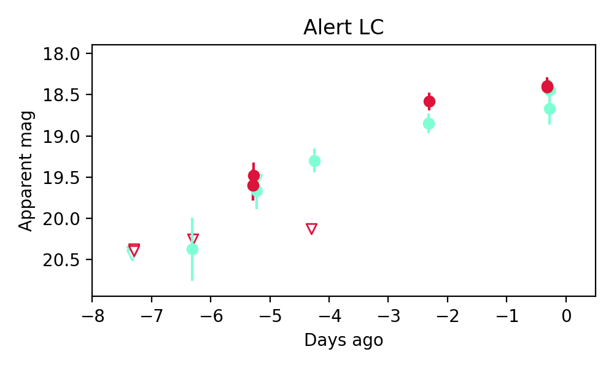
Extinction-corrected gr color:
From alerts: 0.23 +/- 0.16 mag
Consistent with synchrotron, g-r>0!
Rise Rate:
g: 0.38 mag/day
r: 0.78 mag/day
i: -99 mag/day
Fade Rate:
g: -99 mag/day
r: 0.66 mag/day
i: -99 mag/day
3. ZTF25abvajbk (Afterglow?) [Back to Top] [Share] [Trigger Swift] [Fritz] [Lasair]RA, Dec: 33.02083, 52.73861 2h12m5.00s, 52d44m18.98sGalactic (l, b): 135.10366, -8.21678 ext(g-r) = 0.182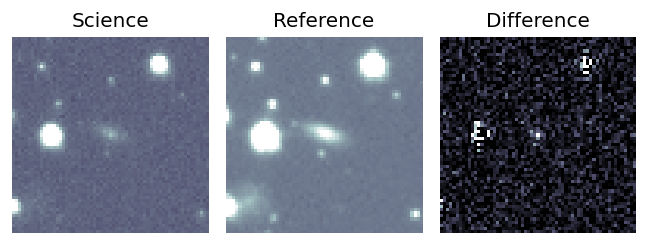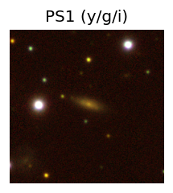
TESS: Sectors [18 58 85]
PS1: 1 source in 3 arcsec Closest: d = 0.72 arcsec photoz=0.06+/-0.01 peak abs mag = -18.47
LegacySurvey: 0 sources in 3 arcsec
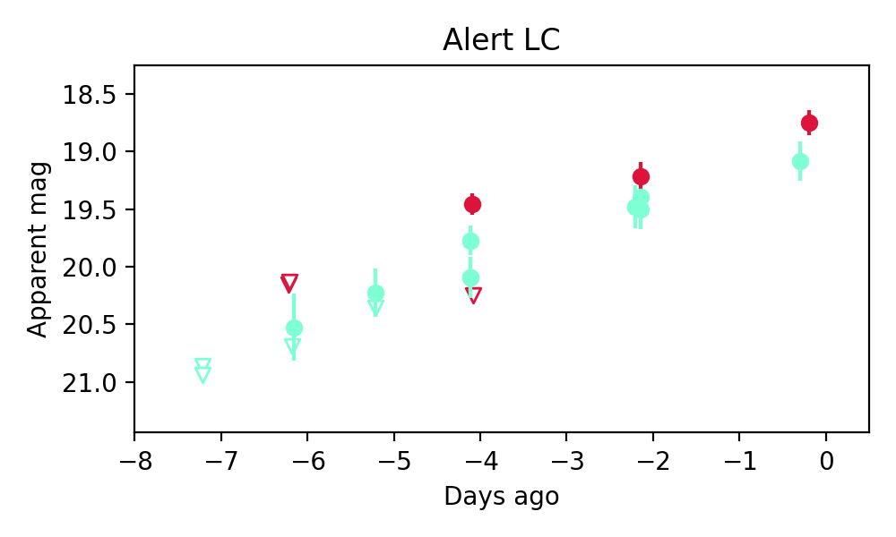
Extinction-corrected gr color:
From alerts: 0.05 +/- 0.16 mag
Consistent with synchrotron, g-r>0!
Rise Rate:
g: 0.24 mag/day
r: 0.53 mag/day
i: -99 mag/day
Fade Rate:
g: -99 mag/day
r: -99 mag/day
i: -99 mag/day
4. ZTF25abvqfvh (FBOT?) [Back to Top] [Share] [Trigger Swift] [Fritz] [Lasair]RA, Dec: 93.54437, 55.45919 6h14m10.65s, 55d27m33.10sGalactic (l, b): 158.76127, 17.09308 ext(g-r) = 0.158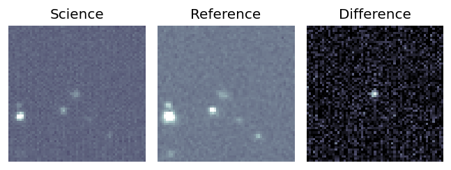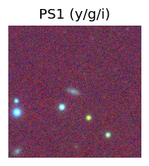
TESS: Sectors [20 60 73]
PS1: 1 source in 3 arcsec Closest: d = 0.76 arcsec photoz=0.16+/-0.04 peak abs mag = -19.87
LegacySurvey: 0 sources in 3 arcsec
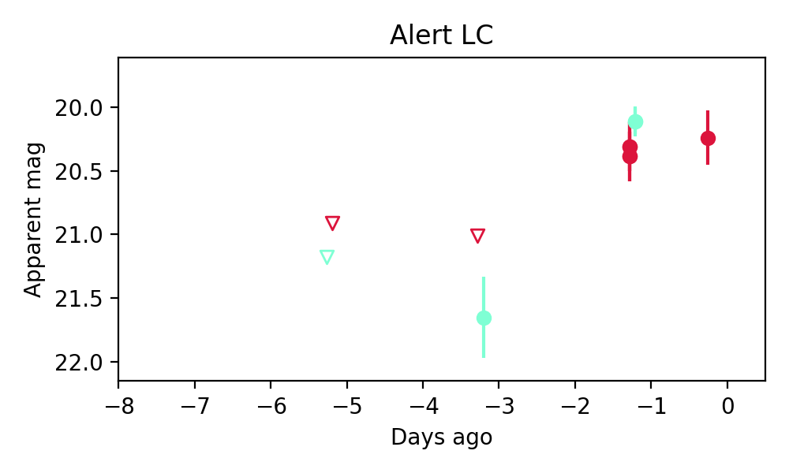
Extinction-corrected gr color:
From alerts: -0.39 +/- 0.12 mag
Rise Rate:
g: 0.77 mag/day
r: 0.35 mag/day
i: -99 mag/day
Fade Rate:
g: -99 mag/day
r: -99 mag/day
i: -99 mag/day